Somos especialistas en calentadores y termos eléctricos. Realizamos cambio de termo, instalación y reparación de boilers y water heaters en toda la Costa Blanca. Si necesitas atención urgente, envíanos una foto por WhatsApp y recibe atención inmediata. Diagnóstico rápido, presupuesto cerrado sin compromiso y servicio profesional garantizado por Fontanería Eduardo Quiroz.
We are specialists in water heaters and electric boilers. We provide boiler replacement, installation and repair of water heaters across the Costa Blanca. For urgent attention, send us a photo via WhatsApp and get immediate assistance. Fast diagnosis, closed quote with no hidden fees, and professional service guaranteed by Fontaneria Eduardo Quiroz.
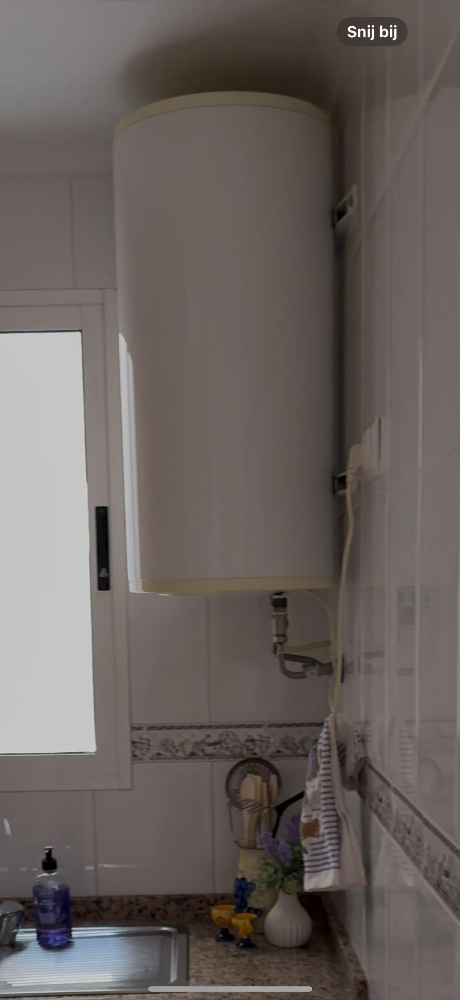
Instalación profesional de un termo eléctrico Slim de 50 litros, con enfoque integral en eficiencia energética, seguridad y durabilidad. Se revisaron todas las conexiones de agua y electricidad, se aplicó aislamiento térmico adecuado y se comprobó la presión para garantizar un funcionamiento óptimo sin fugas. Fontanería Eduardo Quiroz asegura suministro constante de agua caliente, mantenimiento sencillo y cumplimiento de normativas locales.
Safe and efficient installation following the highest plumbing standards. All water and electrical connections are checked, thermal insulation applied, and pressure tests conducted to ensure leak-free operation. This service by Fontanería Eduardo Quiroz provides reliable hot water supply, easy maintenance, and adherence to local regulations.
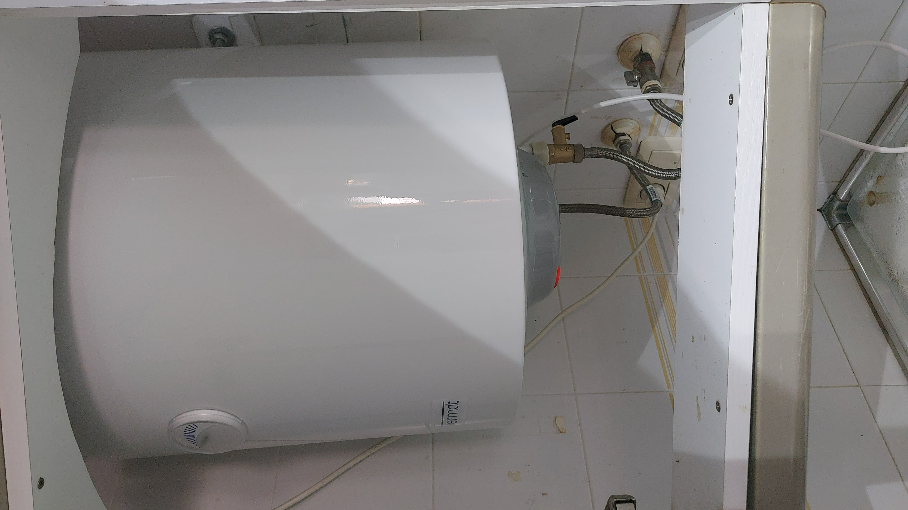
Instalación de termo eléctrico Simat de 50 litros, enfocada en rendimiento, durabilidad y seguridad. Se revisaron conexiones hidráulicas y eléctricas, se realizaron pruebas de presión y se comprobó correcto sellado y válvulas de seguridad. Fontanería Eduardo Quiroz garantiza agua caliente constante, mantenimiento sencillo y cumplimiento de normativas técnicas.
Professional installation focused on durability, performance, and safety. All hydraulic and electrical connections were checked, pressure tests performed, joints sealed, and safety valves installed. Fontanería Eduardo Quiroz ensures consistent hot water supply, easy maintenance, and compliance with technical standards.
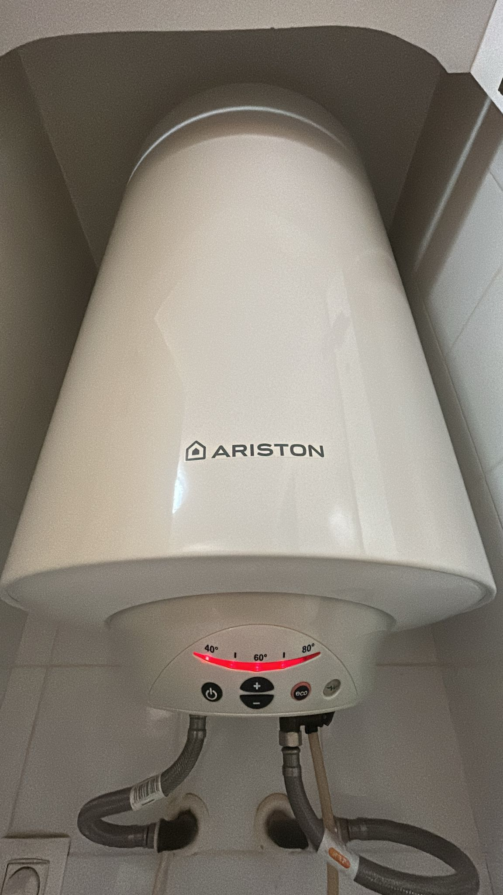
Servicio urgente de reparación de termo eléctrico de 50 litros en Guardamar. Incluye diagnóstico completo, reemplazo de componentes defectuosos, pruebas de presión y seguridad. Fontanería Eduardo Quiroz garantiza reparación rápida y confiable, restaurando suministro de agua caliente de manera eficiente para residencias y apartamentos.
Fast and reliable repair including full diagnosis, replacement of faulty parts, and pressure and safety testing. Fontanería Eduardo Quiroz ensures efficient restoration of hot water supply. Perfect for homes and apartments in Torrevieja and nearby areas.
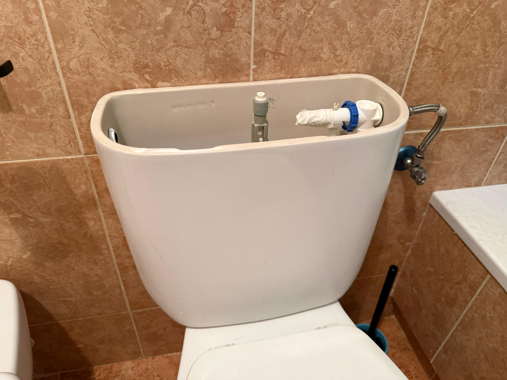
Reparación completa de cisterna de inodoro, solucionando fugas, bloqueos y problemas de presión. Fontanería Eduardo Quiroz revisa mecanismos internos, llaves de paso y niveles de agua. Se realiza limpieza, sustitución de piezas desgastadas y prueba final asegurando óptimo funcionamiento y durabilidad.
Complete repair addressing leaks, blockages, and pressure issues. Fontanería Eduardo Quiroz checks internal mechanisms, shut-off valves, and water levels. Cleaning, replacement of worn parts, and final testing ensure optimal performance.
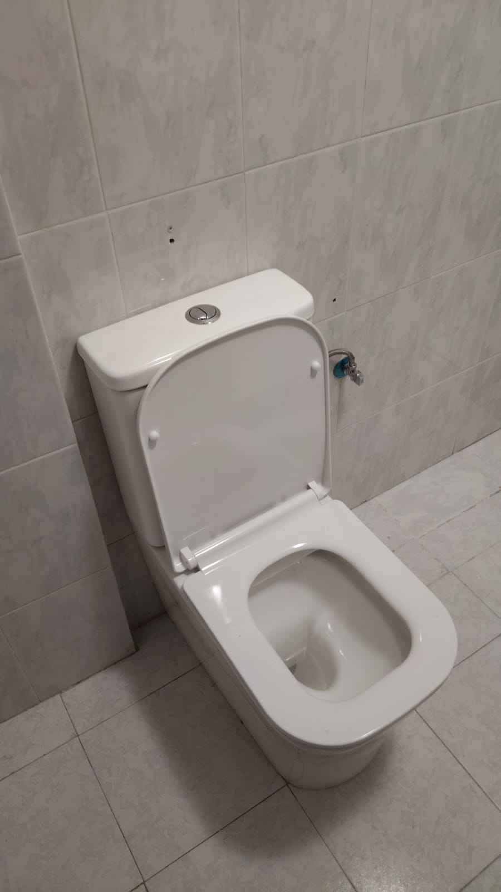
Instalación profesional de inodoro, garantizando nivelación, conexión segura de agua y revisión de presión. Fontanería Eduardo Quiroz asegura higiene, confort y cumplimiento normativo. Incluye inspección de tuberías, ajuste de mecanismos y prueba final para evitar filtraciones.
Accurate leveling, secure water connection, and pressure inspection ensure hygiene, comfort, and compliance. Pipes inspected, mechanisms adjusted, and final testing prevents leaks.
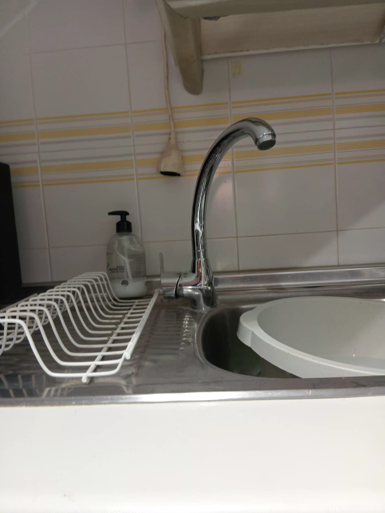
Instalación de grifo de fregadero, asegurando flujo constante de agua, conexiones seguras y sellado correcto. Fontanería Eduardo Quiroz realiza pruebas de presión, limpieza de tuberías y revisión completa de la instalación. Servicio confiable, duradero y profesional.
Professional faucet installation with consistent water flow, secure connections, and proper sealing. Pressure tests, pipe cleaning, and full inspection ensure a durable and safe kitchen installation.
¿Vives en Torrevieja, Guardamar, San Fulgencio, La Zenia, Orihuela Costa, Rojales, Ciudad Quesada, La Marina, Santa Pola o Algorfa? Los termos convencionales sufren graves daños debido a la alta mineralización del agua en nuestra zona. La acumulación de cal destruye los calentadores estándar en meses.
En Fontanería Eduardo Quiroz, recomendamos e instalamos profesionalmente el termo eléctrico Ariston PRO1 ECO Drive Multis, diseñado específicamente para resistir el agua dura.
Do you live in Torrevieja, Guardamar, San Fulgencio, La Zenia, Orihuela Costa, Rojales, Ciudad Quesada, La Marina, Santa Pola, or Algorfa? Conventional water heaters suffer severe damage due to high water mineralization. Limescale destroys standard boilers within months.
At Fontanería Eduardo Quiroz, we highly recommend and professionally install the Ariston PRO1 ECO Drive Multis, specifically engineered to withstand hard water conditions.
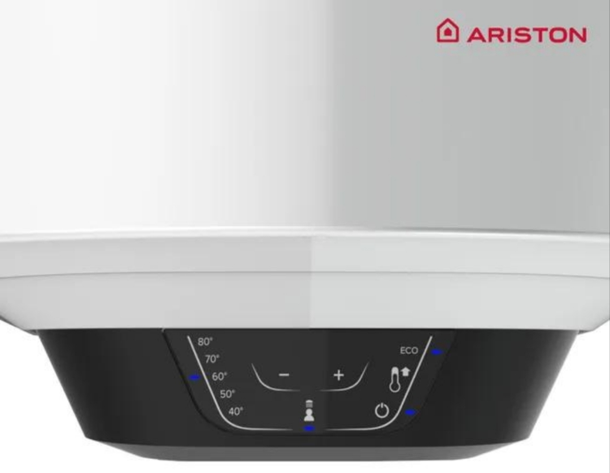
Recommended for hard water areas: Torrevieja, Guardamar del Segura, San Fulgencio, La Zenia, Orihuela Costa, Rojales, Ciudad Quesada, La Marina, Santa Pola, and Algorfa.
The Ariston PRO1 ECO Drive Multis is specifically engineered to withstand the challenging hard water conditions of the Costa Blanca. Its advanced technology prevents limescale buildup, ensuring maximum durability and consistent performance for years.
All prices include professional installation by certified plumbers. Additional materials (shut-off valves, connectors) are quoted separately based on your specific installation requirements.
If you live in Torrevieja, Guardamar, or any area with hard water, conventional water heaters can fail within months due to limescale buildup. The Ariston PRO ECO Drive Multis solves this problem with its double sheathed elements and anti-limescale protection, giving you peace of mind and reliable hot water for years.
Need immediate assistance? Send us a photo of your current water heater via WhatsApp and receive a free technical diagnosis and no-obligation quote within minutes.
Fontanería Eduardo Quiroz – Your trusted English-speaking plumber on the Costa Blanca. Specialists in water heaters, boilers, and hard water solutions.
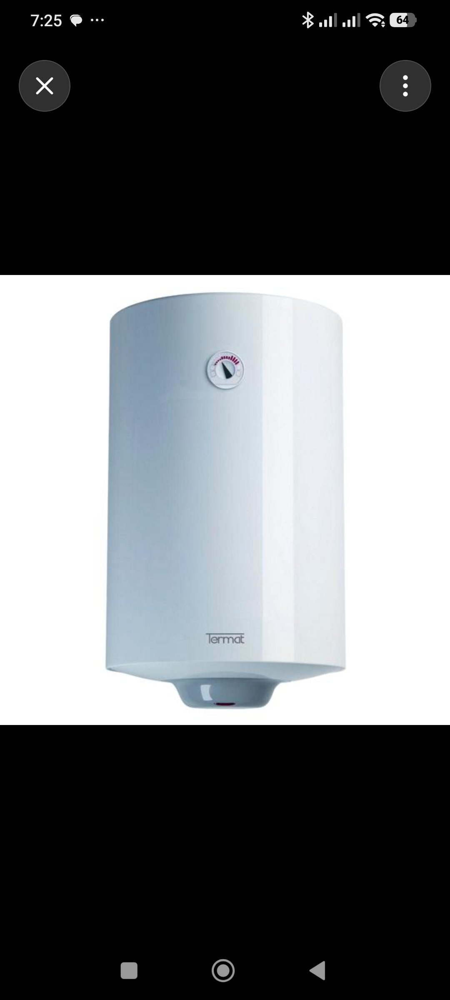
En Fontanería Eduardo Quiroz somos especialistas en calentadores y cambio de termo. Para soluciones económicas y fiables, recomendamos el termo eléctrico Ariston Simat (también conocido como Thermat). Diseñado para un uso cotidiano eficiente, cuenta con calderín esmaltado protegido con ánodo de magnesio y resistencia envainada sumergida, garantizando durabilidad y un rendimiento confiable. Oferta especial: 195€ + IVA (modelo 50L: 57,3 × 45 × 48 cm) con instalación profesional incluida exclusivamente en Torrevieja. También disponible en 80L (260€ + IVA) y 100L (320€ + IVA). Clasificación energética C y potencia de 1200W.
At Fontanería Eduardo Quiroz, we are specialists in boilers and water heater replacement. For affordable and reliable solutions, we recommend the Ariston Simat (also known as Thermat) electric water heater. Designed for efficient daily use, it features an enamelled tank protected by a magnesium anode and a sheathed immersed resistance, ensuring durability and reliable performance. Special offer: €195 + VAT (50L model: 57.3 × 45 × 48 cm) with professional installation included exclusively in Torrevieja. Also available in 80L (€260 + VAT) and 100L (€320 + VAT). Energy class C and 1200W power.
📸 Envíanos una foto por WhatsApp y recibe atención inmediata / Send us a photo via WhatsApp for immediate attention.
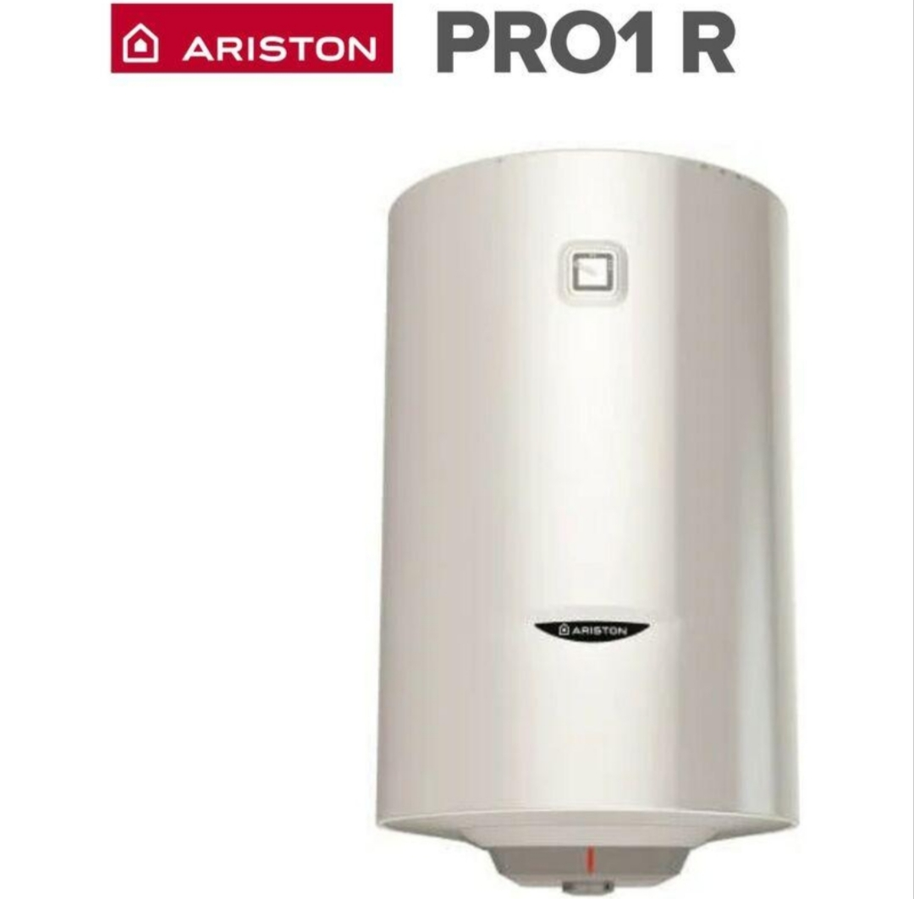
En Fontanería Eduardo Quiroz somos especialistas en calentadores y cambio de termo. El Ariston PRO1 R es la solución ideal para agua caliente sanitaria, combinando un calderín vitrificado al titanio (tratamiento a 850°C), resistencia blindada de 1.500 W y tecnología WaterPlus (hasta un 16% más de agua caliente disponible). Su ánodo de magnesio de grandes dimensiones y aislamiento de poliuretano sin CFC garantizan durabilidad y eficiencia (Clase energética C). Además, su diseño permite instalación vertical u horizontal, ideal para superar limitaciones de espacio en armarios, baños, lavaderos o cocinas.
La capacidad final debe elegirse teniendo en cuenta el número de duchas, hábitos de consumo, caudal de los grifos y el espacio disponible.
At Fontanería Eduardo Quiroz, we are specialists in boilers and water heater replacement. The Ariston PRO1 R is the ideal domestic hot water solution, combining a titanium-vitrified tank (850°C treatment), a 1,500 W blind heating element, and WaterPlus technology. Available in vertical and horizontal versions to overcome space limitations in cabinets, bathrooms, or kitchens.
📸 Envíanos una foto por WhatsApp y recibe atención inmediata / Send us a photo via WhatsApp for immediate attention.
Zonas de servicio: Torrevieja, Guardamar del Segura, La Mata, La Marina, San Fulgencio, Rojales, Ciudad Quesada y Orihuela Costa.
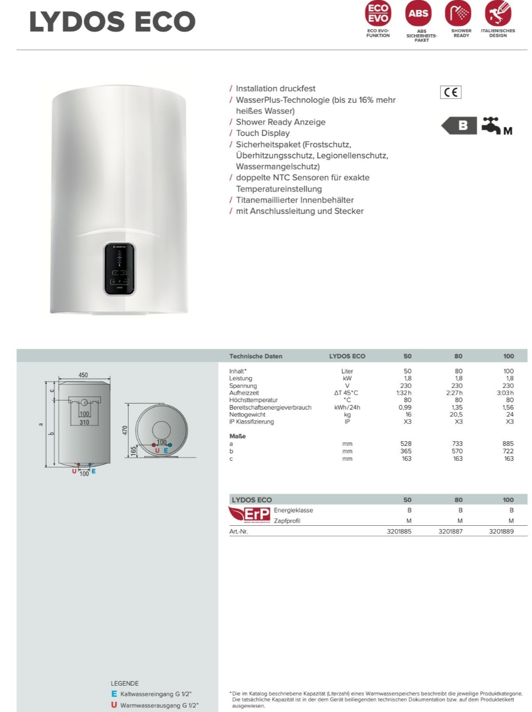
En Fontanería Eduardo Quiroz somos especialistas en calentadores y cambio de termo. El Ariston LYDOS ECO es la solución de eficiencia superior para agua caliente sanitaria, con calderín vitrificado al titanio a 850°C, resistencia blindada de 1.500 W y control electrónico. Destaca por su función inteligente ECO EVO (ahorro de hasta un 14% aprendiendo tus hábitos) y tecnología WaterPlus (hasta un 16% más de agua caliente disponible). Incluye display frontal con indicador "Shower Ready" y pack de seguridad ABS.
La elección de la capacidad depende del caudal de ducha, duración de las duchas y uso simultáneo, no solo del número de personas.
At Fontanería Eduardo Quiroz, we are specialists in boilers and water heater replacement. The Ariston LYDOS ECO is the superior efficiency solution for domestic hot water, featuring a titanium-vitrified tank at 850°C, a 1,500 W blind heating element, and electronic control. It stands out for its smart ECO EVO function (up to 14% savings by learning your habits) and WaterPlus technology (up to 16% more hot water available). Includes a front display with "Shower Ready" indicator and ABS safety pack.
📸 Envíanos una foto por WhatsApp y recibe atención inmediata / Send us a photo via WhatsApp for immediate attention.
Zonas de servicio: Torrevieja, Guardamar del Segura, La Mata, La Marina, San Fulgencio, Rojales, Ciudad Quesada y Orihuela Costa.
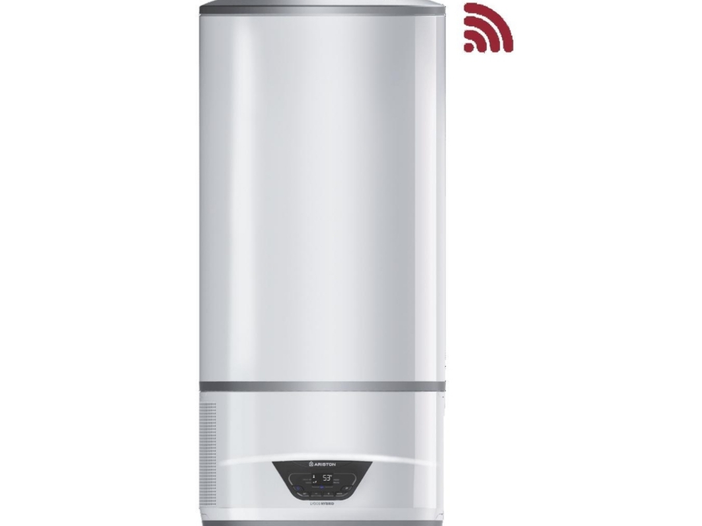
En Fontanería Eduardo Quiroz somos especialistas en calentadores, termos eléctricos y sistemas de aerotermia. El Ariston Lydos Hybrid WiFi es la solución de máxima eficiencia para agua caliente sanitaria, combinando una bomba de calor (que aprovecha la energía térmica del aire) con una resistencia eléctrica de apoyo. Esto garantiza un ahorro de hasta el 50% en electricidad frente a un termo convencional de Clase B.
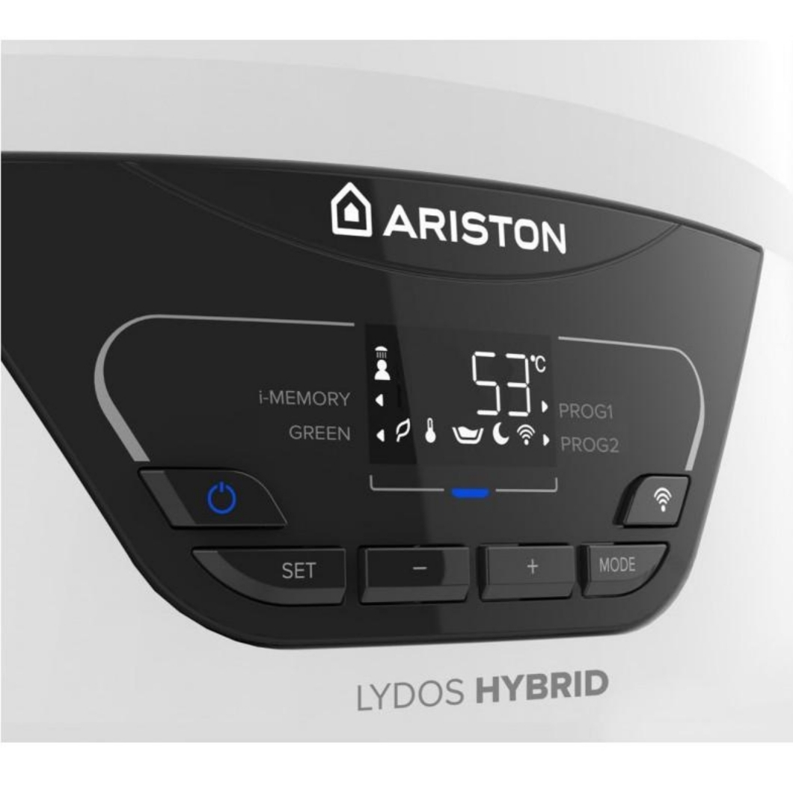
Características técnicas de élite: Conectividad WiFi (App Ariston NET), sistema inteligente i-Memory que aprende tus hábitos, modo Green, función Boost para calentamiento rápido, refrigerante R134a, nivel sonoro de solo 49 dB y conexiones hidráulicas ocultas.
⚠️ Nota técnica importante de instalación: Este equipo requiere un volumen mínimo de habitación de 13 m³, espacio suficiente para la captación de aire y una solución profesional para la evacuación de condensados. No es un cambio directo sin evaluar previamente las condiciones del local.
At Fontanería Eduardo Quiroz, we are specialists in boilers, electric water heaters, and aerothermal systems. The Ariston Lydos Hybrid WiFi is the maximum efficiency solution for domestic hot water, combining a heat pump (which harnesses thermal energy from the air) with a supporting electric resistance. This guarantees up to 50% electricity savings compared to a conventional Class B water heater.
Elite technical features: WiFi connectivity (Ariston NET App), smart i-Memory system that learns your habits, Green mode, Boost function for rapid heating, R134a refrigerant, noise level of only 49 dB, and hidden hydraulic connections.
⚠️ Important technical installation note: This unit requires a minimum room volume of 13 m³, sufficient space for air intake, and a professional solution for condensate drainage. It is not a direct drop-in replacement without prior evaluation of the room's conditions.
📸 Envíanos una foto por WhatsApp del equipo actual y del espacio disponible para valorar la instalación / Send us a photo via WhatsApp of your current setup and available space to evaluate the installation.
Zonas de servicio: Torrevieja, Guardamar del Segura, San Fulgencio, Rojales, La Mata, Ciudad Quesada y Orihuela Costa.
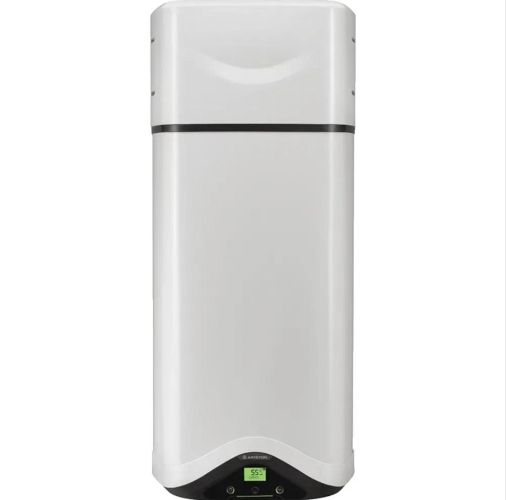
En Fontanería Eduardo Quiroz somos especialistas en sistemas de aerotermia para agua caliente sanitaria (ACS). El Ariston NUOS EVO A+ 110 no es un termo eléctrico convencional, sino una bomba de calor compacta diseñada específicamente para extraer energía térmica del aire y transferirla al agua, logrando un COP de 2,45 (a 7°C) y un consumo medio de solo 250W en modo bomba de calor.
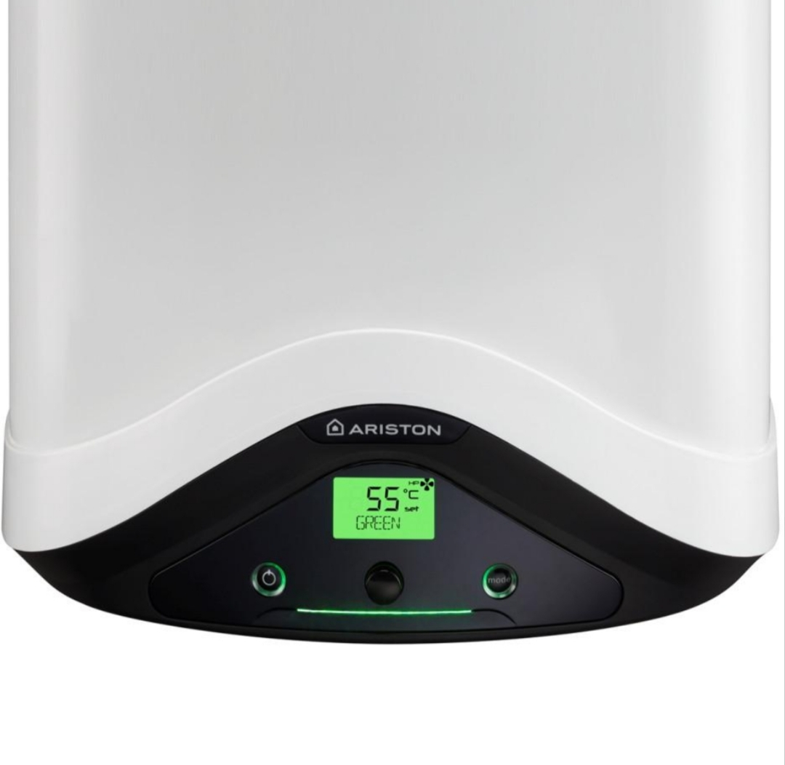
⚠️ Nota técnica crítica de instalación: Requiere un volumen mínimo de local de 20 m³ (sin conductos), circulación de aire adecuada y evacuación profesional de condensados. Dimensiones: 1398 x 506 x 535 mm.
At Fontanería Eduardo Quiroz, we are specialists in aerothermal systems for domestic hot water (DHW). The Ariston NUOS EVO A+ 110 is not a conventional electric water heater, but a compact heat pump specifically designed to extract thermal energy from the air and transfer it to the water, achieving a COP of 2.45 (at 7°C) and an average consumption of only 250W in heat pump mode.
⚠️ Critical technical installation note: Requires a minimum room volume of 20 m³ (without ducts), adequate air circulation, and professional condensate drainage. Dimensions: 1398 x 506 x 535 mm.
📸 Envíanos una foto por WhatsApp de la instalación actual y del espacio disponible para valorar la viabilidad / Send us a photo via WhatsApp of your current setup and available space to evaluate viability.
Zonas de servicio: Torrevieja, Guardamar del Segura, San Fulgencio, Rojales, La Mata, Ciudad Quesada y Orihuela Costa.
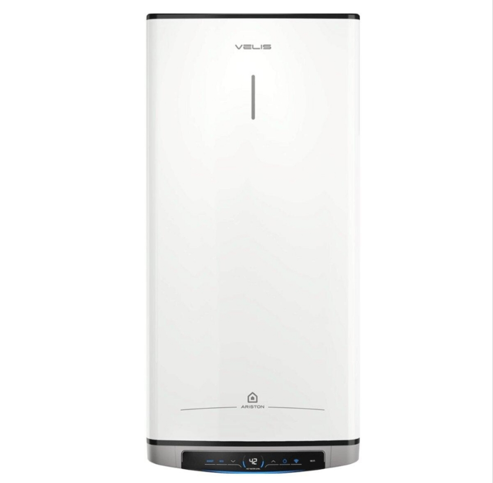
En Fontanería Eduardo Quiroz somos especialistas en calentadores, termos eléctricos y sustitución de equipos de agua caliente sanitaria. El Ariston Velis WiFi es un termo eléctrico de doble depósito y diseño plano, pensado para viviendas donde el espacio es limitado. Su profundidad aproximada de 27 cm permite aprovechar mejor armarios, baños, lavaderos y cocinas frente a un termo cilíndrico tradicional.
Incorpora conectividad WiFi para controlarlo desde el móvil, pantalla LCD táctil y función ECO EVO, que adapta el funcionamiento a los hábitos de consumo de agua caliente. Su calderín esmaltado al titanio a 850 °C, el ánodo de magnesio y su doble resistencia blindada ayudan a mejorar la durabilidad del equipo.
Dato técnico importante: aunque la ficha técnica muestra dos resistencias de 1.500 W, no se debe anunciar como potencia total de 3.000 W. La documentación comercial indica potencia de 1.500 W, con funcionamiento alternado de las resistencias.
📸 Envíanos una foto por WhatsApp y recibe atención inmediata.
Zonas de servicio: Torrevieja, Guardamar del Segura, San Fulgencio, Rojales, La Mata, Ciudad Quesada y Orihuela Costa.
En Fontanería Eduardo Quiroz no solo instalamos, también diagnosticamos. Estas son las consultas más habituales que recibimos en Torrevieja y la Costa Blanca. Si tu problema no está aquí, envíanos una foto por WhatsApp y te daremos un diagnóstico inmediato.
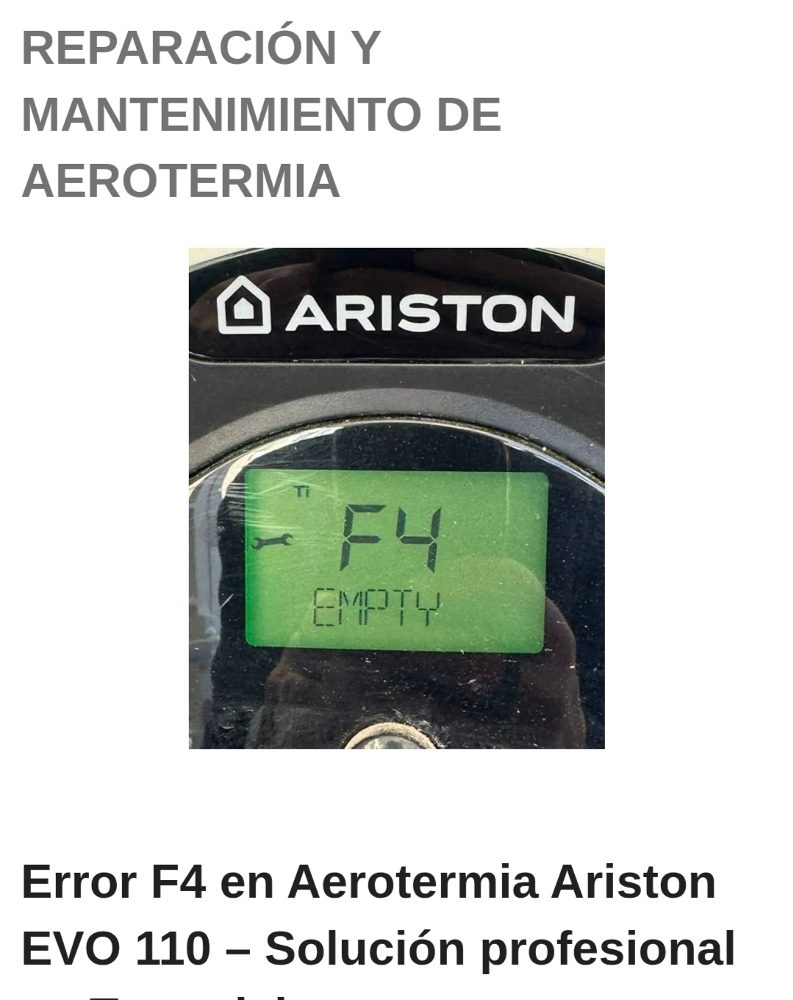
El código de error F4 indica un problema en el circuito hidráulico o en los sensores de temperatura/flujo. No lo reinicies continuamente. Suele deberse a falta de caudal de agua, aire en el circuito o un fallo en la sonda. Requiere una revisión profesional para evitar daños mayores en la bomba de calor.
En zonas de agua dura como Torrevieja, Guardamar o La Zenia, recomendamos revisar y sustituir el ánodo de magnesio cada 2 años. El ánodo es un "sacrificio" que se corroe para proteger el calderín de tu termo. Si se agota, la corrosión atacará directamente al depósito, provocando fugas irreparables.
Un ligero goteo durante el ciclo de calentamiento es normal (es la válvula liberando el exceso de presión por dilatación térmica). Sin embargo, si gotea constantemente incluso en frío, indica una presión de red excesiva (necesitas un reductor de presión) o que la válvula está obstruida por la cal y debe ser reemplazada.
En la Costa Blanca, la causa número uno es la acumulación de cal en la resistencia. Si tu termo tiene más de 3-4 años y es de resistencia sumergida, la cal actúa como aislante, forzando el equipo y aumentando tu factura eléctrica. La solución definitiva es migrar a un modelo con resistencia blindada (como el PRO1 R) o tecnología Multidrive.
At Fontanería Eduardo Quiroz, we don't just install; we diagnose. These are the most common issues we handle in Torrevieja and the Costa Blanca. If your problem isn't listed here, send us a photo via WhatsApp for an immediate diagnosis.
Error code F4 indicates a problem in the hydraulic circuit or temperature/flow sensors. Do not keep resetting it. It is usually caused by low water flow, air in the circuit, or a faulty probe. It requires professional inspection to prevent major heat pump damage.
In hard water areas like Torrevieja, Guardamar, or La Zenia, we recommend checking and replacing the magnesium anode every 2 years. The anode sacrificially corrodes to protect your tank. If it depletes, corrosion will attack the tank directly, causing irreparable leaks.
Slight dripping during the heating cycle is normal (the valve releasing excess pressure from thermal expansion). However, if it drips constantly, even when cold, it indicates excessive mains pressure (you need a pressure reducer) or a valve clogged with limescale that must be replaced.
On the Costa Blanca, the number one cause is limescale buildup on the heating element. If your heater is over 3-4 years old and has an immersed element, limescale acts as an insulator, forcing the unit to work harder and increasing your electricity bill. The definitive solution is upgrading to a model with a blind heating element (like the PRO1 R) or Multidrive technology.
📸 ¿Necesitas un diagnóstico? Envíanos una foto del error, la fuga o tu instalación actual por WhatsApp / Need a diagnosis? Send us a photo of the error code, leak, or your current setup via WhatsApp.
Zonas de servicio: Torrevieja, Guardamar del Segura, San Fulgencio, Rojales, La Mata, Ciudad Quesada y Orihuela Costa.